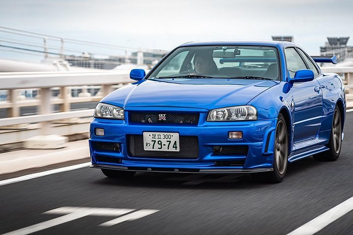

Skyline
O Nissan Skyline GT-R R34 é um dos carros esportivos mais icônicos da história automotiva e possui um status lendário entre entusiastas e colecionadores. Produzido entre 1999 e 2002, o R34 é a quarta geração da linha GT-R, uma série conhecida por seu desempenho impressionante e engenharia avançada. Aqui estão alguns detalhes interessantes sobre o R34:
Desempenho e Motor
Motor: O R34 GT-R é movido pelo motor RB26DETT, um 6 cilindros em linha, 2.6 litros, com dois turbocompressores (biturbo). Este motor é conhecido por sua robustez e capacidade de produzir grandes quantidades de potência. Potência: O motor RB26DETT é capaz de gerar cerca de 280 hp (cavalos de potência) de fábrica, mas devido às suas características de engenharia, muitos proprietários conseguem extrair muito mais potência com modificações. Transmissão: Ele vem com uma transmissão manual de 6 marchas, o que proporciona uma experiência de condução envolvente e precisa.
Tecnologia e Engenharia
Sistema ATTESA E-TS: O R34 GT-R é equipado com o sistema de tração integral ATTESA E-TS (Advanced Total Traction Engineering System for All-Terrain), que proporciona uma distribuição dinâmica de torque entre os eixos dianteiro e traseiro, melhorando a aderência e a estabilidade. Sistema Super-HICAS: O sistema de direção traseira ativa (Super-HICAS) melhora a manobrabilidade e a estabilidade em alta velocidade, permitindo que as rodas traseiras se movam na direção oposta às dianteiras em baixas velocidades e na mesma direção em altas velocidades. Suspensão: O R34 possui uma suspensão independente nas quatro rodas, contribuindo para uma condução equilibrada e um controle preciso.
Design e Estilo
Visual: O design do R34 GT-R é agressivo e estilizado, com uma frente imponente, entradas de ar grandes e um perfil aerodinâmico. Os faróis de cristal e a grande asa traseira são elementos distintivos. Interior: O interior do R34 é focado no motorista, com assentos esportivos e uma disposição de instrumentos orientada para o desempenho. O painel de instrumentos inclui um display multifuncional que fornece dados vitais do veículo.
Cultura e Legado
Popularidade: O GT-R R34 ganhou fama não apenas por seu desempenho, mas também por sua presença na cultura popular. Ele apareceu em vários filmes e videogames, incluindo a série "Fast & Furious" e o jogo "Gran Turismo". Colecionismo: Devido à sua engenharia avançada e ao seu papel icônico na cultura automobilística, o R34 GT-R é altamente valorizado por colecionadores e entusiastas. Modelos bem conservados podem alcançar preços elevados no mercado de carros usados.
Legalidade e Importação
Importação: Em alguns países, o R34 GT-R enfrenta restrições de importação devido a regulamentos relacionados a veículos antigos. Nos Estados Unidos, por exemplo, o carro só pode ser importado legalmente sob a Lei de 25 Anos, que permite a importação de veículos que têm pelo menos 25 anos de idade.
O Nissan Skyline GT-R R34 é um exemplo brilhante da engenharia japonesa e continua a ser um ícone no mundo dos carros esportivos. Sua combinação de tecnologia avançada, desempenho e design distinto garante que ele permaneça um carro admirado e respeitado até hoje.